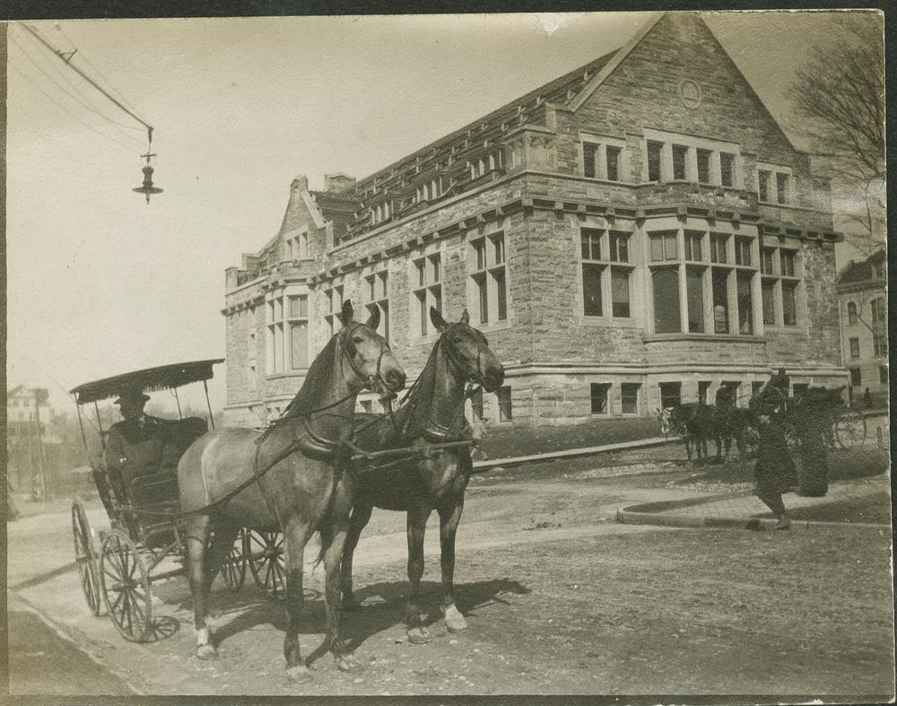

This Day in History!
The name "Franklin" was given in honor of Benjamin Franklin in 1839
Franklin, named for Benjamin Franklin, was one of two towns formed out of the original Town of Kinnickinnic by the Wisconsin Territorial Legislature in 1839. Franklin was bounded by Greenfield to the north, Oak Creek to the east, and Racine and Waukesha Counties to the south and west. It was reported that the quality of much of its land was excellent, while other portions were rough with many boulders. Originally, Franklin was covered with heavy timber, mostly hardwoods such as walnut, butternut, and hickory. There was an abundance of wild animals: bears, panthers, wolves, wildcats, deer, and wild turkeys. The Root River furnished nearly the entire drainage for the Town. Life was primitive - a "full dress" suit for the area and time was described as buckskins over a flax shirt and moccasins. Franklin's early town officials were spunky individuals who fought against annexation to the City of Milwaukee. They even disappeared for several weeks until the City charter arrived from Madison in 1956. After the intention to incorporate from a town to a city in 1956 was made known, town officials hid so the summons server couldn't find them and block the attempt. Franklin, a part of the Northwest Territory, was organized into a township in 1841. The name "Franklin" was given in honor of Benjamin Franklin in 1839. The township consisted of 36 miles and 105 years later, in 1956, was known as a "City of homes". Franklin remained a rural town for more than 100 years. In 1956, a fear that the City of Milwaukee would attempt to annex parts of Franklin prompted the town to incorporate as a fourth-class City. Milwaukee was looking at expanding its boundaries and the rural towns of Franklin and Oak Creek were sitting targets for annexation. Milwaukee planned to annex a portion of Franklin from 27th Street to Ryan Road to 51st Street to the Town's northern boundary. At an annual meeting in April 1956 in the old Town Hall, which has since been moved to Lions Legend Park, Town Chairman Thomas Godsell said the residents were against the piecemeal annexation of the Town. He called for a study to combat "the threats to bust up our Town". Town officials added the population of inmates of the House of Correction to make the City eligible for incorporation to become a fourth-class City. To incorporate, the Town needed a petition signed by 100 electorate and one-half of the property owners. Besides the petition, a census was needed and a referendum had to be passed. The Town needed 5,000 residents and $20 million in equalized value to become a fourth-class City under the new law. Not all Franklin residents wanted to see the Town become a City. In fact, during the early consideration of the Oak Creek bill, Town Officials opposed the bill because they said it would not ease their problem since then they would be open to annexation by the City of Oak Creek. On August 15, 1956, the Town was incorporated. It was the second City to use the new law which allowed an essentially farm and rural area to incorporate. Oak Creek was the first.